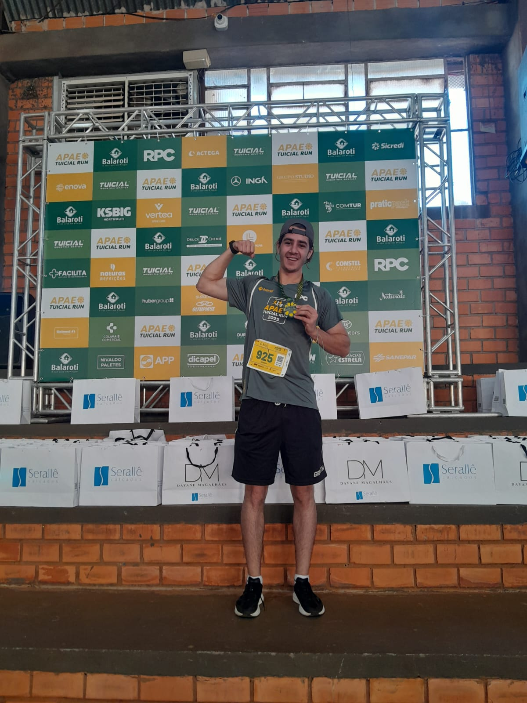

Minha Primeira Corrida de 5km: O Início de uma Jornada
Tudo começou com uma corrida organizada pela Gráfica Tuicial, onde eu trabalho. Nunca tinha participado de uma prova oficial antes, e confesso que estava nervoso na largada. Meu objetivo era simples: completar os 5km sem parar. Quando cruzei a linha de chegada, o cronômetro marcava 30 minutos. Não era o tempo mais rápido, mas para mim representava uma conquista enorme.
Aquela primeira corrida despertou algo em mim. Comecei a treinar com mais frequência, melhorei minha técnica de corrida e aprendi sobre a importância do aquecimento e alongamento. A evolução foi gradual, mas constante. Hoje, consigo completar os mesmos 5km em apenas 20 minutos - uma melhora de 10 minutos! Cada treino é uma oportunidade de superar meus próprios limites e me tornar uma versão melhor de mim mesmo.
